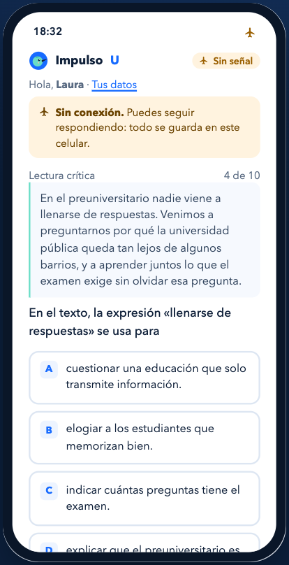
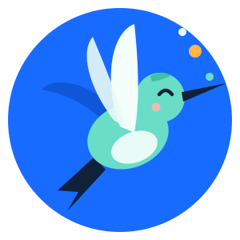

Que llegar al Saber 11 no dependa de poder pagar un preicfes.
Diagnóstico, plan y clase para los talleristas de los preuniversitarios populares.
Jesús Romero · Felipe Soto · Josman Ramírez · Santiago Gil · Gestión de Proyectos Informáticos · Pontificia Universidad Javeriana · noviembre de 2026
Impulso U
El problema
En Colombia, menos de la mitad de los bachilleres entra a la educación superior.
Y la brecha empieza antes: en el Saber 11 de 2025, los colegios privados superaron a los públicos por 31 puntos, y el nivel socioeconómico más alto al más bajo, por 77.
47,9 de cada 100 entran al año siguiente de graduarse52 no entran
Fuentes: El Espectador, 2026 [12], con la cifra del Gobierno nacional; Portafolio, s. f. [29], con datos del Icfes sobre el Saber 11.
Impulso U
En Bogotá
Más de un tercio de los bachilleres se queda afuera. Los preuniversitarios populares los preparan gratis.
Son colectivos comunitarios que, los sábados y con voluntarios, preparan para el Saber 11 y el examen de la Universidad Nacional.
27.000
de los 73.747 bachilleres de Bogotá en 2025 no entraron a la educación superior
Fuente: Grupo Impulso U, 2026 [20], con datos de la Secretaría de Educación de Bogotá y el SNIES (2025).
Impulso U
Prepararse no cuesta lo mismo
Un preicfes comercial cuesta hasta $2,8 millones por ciclo; el preuniversitario popular es gratis, pero alcanza a aplicar un solo simulacro.
Fuentes: conversaciones con educadores populares, Grupo Impulso U, 2026 [20]; La Salle, 2025 [32]; Universidad del Cauca, 2026 [33].
Impulso U
Dentro del preuniversitario
Hoy, la tallerista prepara sola cada clase, sin formación pedagógica ni tiempo.
AR
Andrea
tallerista voluntaria · 40 estudiantes
voluntaria2 a 5 h por semanacasi nunca licenciada
L
M
M
J
V
S
D
su tiempo para el preuniversitario: la franja verde y el sábado
Elegir qué temas priorizarsin diagnóstico del grupo
Diseñar cada clasesin formación pedagógica
Manejar 40 estudiantescon niveles muy distintos
Aplicar el simulacroy corregirlo a mano
decide sola
La clase no responde a lo que el grupo necesita
y los estudiantes dejan de venir
O ella se sobrecarga y no vuelve al ciclo siguiente
AR
lo que preparó se va con ella
1simulacro por ciclo: 40 a 50 hojas corregidas a mano
¿En qué está débil el grupo? Nadie lo sabe con datos.
Lectura?
Álgebra?
Porcentajes?
Geometría?
Biología?
Química?
Física?
Sociales?
Inglés?
Estadística?
Fuente: conversaciones con dos educadores de preuniversitarios populares, Grupo Impulso U, 2026 [20]. Los puntos que se apagan son ilustrativos.
Impulso U
Lo que cuesta en estudiantes
De cada 100 que empiezan en febrero, 20 siguen en el preuniversitario cuando llega el examen.
FebMarAbrMayJunJulAgo
Saber 11
Fuente: estimación de dos educadores populares, Grupo Impulso U, 2026 [20]; se mide en el piloto. La posición de quienes se quedan en el camino es ilustrativa.
Impulso U
Quiénes
Quien paga no es quien usa: el municipio paga lo que ya compra, y el colectivo lo recibe gratis.
PagaMunicipio o FDLya compra simulacros para los estudiantes de grado 11 de sus colegios
OperaImpulso Ula app y un coordinador que acompaña a cada colectivo
Usan gratisEl colectivosu comité es dueño del banco y de los datos; Andrea prepara y Laura practica
$54 milpor estudiante
gratisapp y 5 h al mes
el reportepor salón y colegio, sin nombres
2027 · capital semillapaga el piloto, que es gratis
Lienzo del modelo de negocio del grupo [20]. Precio: mediana de 9 contratos de simulacros, 2025–2026 [21]. El colectivo es el responsable de los datos e Impulso U los trata por encargo suyo (Ley 1581 de 2012).
Impulso U
El mercado
El presupuesto ya existe: los municipios gastaron $23.360 M en simulacros en 2026.
239 alcaldías y gobernaciones, 80% más gasto que en 2024. Compran por contrato público, para los mismos estudiantes de grado 11 que van a los colectivos.
Bogotá$2.472 Mal año. La Secretaría no compra por SECOP: entramos por los fondos de desarrollo local.
Suba y Ciudad Bolívar$512 Mal año. Ahí están los colectivos del piloto: es el primer mercado.
Gasto de alcaldías, gobernaciones y secretarías en contratos de simulacros, preicfes y preparación para el Saber 11, 2024 a 2026 (2026 hasta el 21 de noviembre): SECOP I y II [5]. Bogotá y localidades: estudiantes de grado 11 oficial (MEN, 2026 [27]; SED, 2024) × $54.200, mediana de 9 contratos [21].
Impulso U
Competencia
Todos dan práctica al estudiante, en papel o en línea; nadie acompaña a quien enseña.
Acompaña al docente · poca práctica
Acompaña al docente · práctica frecuente
Solo práctica · poca
Solo práctica · frecuente
Acompaña a quien enseña ↑
↓ Solo da práctica al estudiante
← 1 a 4 simulacros al año
Práctica cada semana →
Editoriales de simulacrosvenden a municipios: 1 a 4 al año, impresos
Preicfes comercialespapel y clases; pagan las familias
Impulso Udiagnóstico, plan y clase; 8 simulacros sin señal
Fuentes: contratos de simulacros en SECOP [5]; Preicfes App, 2026 [15]; precios de plataformas en el cuaderno del grupo [20]. Logos y marcas de sus dueños, con uso referencial.
Impulso U
La solución
Impulso U acompaña del diagnóstico a cada clase.
1
Simulacro diagnósticoen el celular, aun sin señal, o en papel leído con OCR
2
Debilidades del grupoun agente las ubica por conocimiento y competencia del Saber 11 y la admisión
3
Roadmap y didáctica de cada claseotro agente ordena el curso según clases y estudiantes, y propone cada clase
4
Cada simulacro ajusta el plande 1 a 8 en el ciclo, sin papel; el plan queda en el colectivo
Impulso UHola, Andrea
Clase 6 · sábado
Matemáticas: porcentajes
Diagnóstico: el grupo falla 3 de 5 preguntas de porcentajes
ObjetivoCalcular descuentos y aumentos porcentuales en situaciones del barrio.
Actividades
1Problema guía: el pasaje con descuento de estudiante20 min
2Parejas por nivel: 4 preguntas del Icfes25 min
3Cada pareja explica una respuesta15 min
Manejo del grupoJunta a quien va adelante con quien va atrás; rota cada 10 minutos.
UsarAjustar
Impulso U
Andrea tiene 50 estudiantes el sábado y ninguna fotocopia.
Así es su semana con Impulso U.
Lo que ve cada uno
Laura ve sus resultados; Andrea ve a Kevin con nombre. ¿Quién más puede verlo?
Impulso UHola, Laura
Terminaste el simulacro 5
7 de 10 correctas
Por área
Lectura crítica2 de 2
Matemáticas1 de 2
Repasa lo que fallaste
Porcentajes: respuesta C. 16 de 40 es el 40%.
Guardado en tu celular; se envía solo cuando vuelva la señal
Laura · estudiante
Impulso U
Política de datos
Con nombre para acompañar; sin nombre para todo lo demás.
Nombre del estudiante
Respuestas una a una
Totales del grupo
Tallerista y comitéel colectivo: responsable de los datos
✓
✓
✓
Estudiantesus propios datos
✓
✓
✓
Impulso Uencargado: opera la plataforma
solo opera
solo opera
✓
Municipio que pagarecibe el reporte del ciclo
✕
✕
grupos ≥ 10
La IApreguntas del banco y el área más baja del grupo
✕
✕
sin nombres
Derechos de Laura y su familia Conocer, corregir y pedir el borrado de sus datos en cualquier momento, desde la app o con el colectivo.
InscripciónEl estudiante acepta y su familia firma el permiso. Sin eso no se guarda nada.
Ciclo, feb–agoRespuestas por estudiante, visibles para su colectivo.
Examen + 6 mesesSe borran las respuestas por estudiante.
DespuésQuedan totales sin nombre para el reporte.
Marco: Ley 1581 de 2012 [25], con reglas para datos de niños, niñas y adolescentes. Revisión jurídica antes del piloto.
Impulso U
Viabilidad técnica
Construirlo cuesta $34,6 M una vez; la nube y la IA, $13 mil por inscrito en 2029, casi todo fijo.
Entre semanaagentes en lote: diagnóstico y clase$155 mil por colectivo y ciclo
⬇
Una descargael simulacro baja una vez: 4,4 KBplataforma fija: $620 mil al mes
✈
Sábado sin señalse responde y se guarda en el teléfono0 llamadas a la IA · $0
⟳
Vuelve la señaltodo llega solo al tablero de Andrea1 escritura por estudiante
$34,6 M
construir una vez: 540 horas de MVP. Es el primer tramo de lo que pedimos y se entrega al firmar.
nube e IA por inscrito al año
3 de 12 requisitos demostrados; el costo de la IA cumple en el cálculo
9 por probar antes del piloto: 500 a la vez, disponibilidad, respaldo, calidad del banco y el tope de gasto de la IA. Sin la prueba de carga con 500 estudiantes no arranca el piloto.
Fuentes: Doc de viabilidad técnica y modelo de costos del grupo [20], con precios de la API de Gemini (2026) a $4.000 por dólar; plataforma: costo real de una aplicación del equipo en Google Cloud (unos $620 mil al mes desde mayo de 2026). Las cifras técnicas son de la maqueta; aún no hay pruebas con usuarios.
Impulso U
Validación temprana
Antes de construir, mostramos una maqueta a quienes la van a usar.
40 a 50estudiantes por simulacro impreso, una vez por ciclo
CC
Sep–oct 20262 educadores popularesvieron la maqueta; sus comentarios definieron el MVP

13 oct 2026Maqueta navegablepublicada en la web; muestra cómo se respondería sin señal
93 / 93
Oct 2026Preguntas reales del Icfescargadas en la maqueta con su clave: Lectura Crítica 49 y Matemáticas 44
SubaCiudad Bolívar
Nov 20262 colectivoscon contacto para el piloto de febrero
Fuentes: Grupo Impulso U, 2026 [20]; cuadernillos del Icfes, 2026 [23]; maqueta en fsotosa-ops.github.io/impulso-u-demo. Aún no hay pruebas con usuarios.
Impulso U
Modelo de negocio
Al municipio le vendemos lo que ya compra, y cobramos como cobran sus contratos.
Qué compraSimulacros con resultados por salón y colegioel reporte de la derecha; con Impulso U el colectivo aplica ocho por ciclo, no uno
Cómo paga$54 mil al año por estudiante que presenta los 3 simulacros contratadoscontra entrega, como El Santuario: «la cantidad de estudiantes atendidos en cada prueba»
Cómo contrataPor mínima cuantía, como la mayoríael convenio de asociación obliga a poner el 30%; en los 5 revisados lo puso la propia entidad
Precio: mediana del gasto municipal en simulacros por estudiante en 9 contratos de 6 departamentos, 2025–2026 [21]. Se paga por estudiante × simulacro aplicado, contra entrega, como en los contratos revisados [5]. Convenio de asociación: Decreto 092 de 2017 [8].
Impulso U
Go-to-market
Entramos gratis por el colectivo, convertimos con el reporte del piloto y crecemos sumando localidades.
1 · Entrar2027 · piloto
3 preuniversitarios populares, gratis
Por la red de educación popular de Jesús, con capital semilla en dos tramos. Se convencen con el primer simulacro sin fotocopias.
Meta: en mayo la usan cada semana
2 · Convertirsep 2027 · primer pagador
Un FDL o un municipio vecino firma
Con el reporte del piloto le proponemos el precio antes de que cierre su presupuesto. El FDL es la primera hipótesis; los municipios que ya compran, la alternativa.
Meta: 1 contrato para 2028 · 250 inscritos
3 · Expandir2029 · más localidades
2 municipios o FDL, 15 colectivos
Con la referencia del primer contrato; sumar un colectivo cuesta menos de 8 h de equipo.
Meta: 750 inscritos · equilibrio si paga $90 mil
municipiocolectivo
Formato «land, convert, expand»: Airbyte, 2021 [1]. Escalar por afiliación: Dees, Anderson y Wei-Skillern, 2004 [9]. Cifras: modelo financiero del grupo [20].
Impulso U
Costo por estudiante
Cada inscrito adicional cuesta $33 mil; el municipio paga $48 mil por inscrito.
Lo que cuesta es acompañar a los colectivos: el agente de IA suma $3 mil por inscrito, y la plataforma es fija.
Modelo financiero del grupo [20]: costo = fijo + marginal × estudiantes; el marginal es la coordinación del colectivo (5 h al mes durante 8 meses), 8 h de equipo y el agente de IA por colectivo, para 50 estudiantes. Precio: 9 contratos [21].
Impulso U
Camino al equilibrio
A la mediana hacen falta 2.222 estudiantes, unos 44 colectivos; al precio meta bastan 712, que caben en el plan de 2029.
Costo = fijo + marginal × inscritos. Ingreso = inscritos que presentan los simulacros contratados × precio. Modelo financiero del grupo [20]; precios: mediana y p75 de 9 contratos [21].
Impulso U
Camino al equilibrio
Al precio meta, la operación cubre su costo desde 2029; hasta entonces necesita $81,1 M de subvención.
Resultado de cada año, en millones de pesos. 2027 es el lanzamiento: el piloto es gratis para los colectivos y cuesta $60,0 M.
Lo que pedimos no se devuelve: es el costo de llegar a un modelo que se sostiene. A la mediana, no se llega.
a la mediana, $54 mil por estudianteal precio meta, $90 mil
Subvención total a la mediana$111,4 My sigue creciendo: ningún año cubre su costo
Subvención total al precio meta$81,1 My se detiene: desde 2029 la operación cubre su costo
Millones de pesos colombianos. Modelo financiero del grupo [20]: equipo técnico (Coderhouse, 2026 [3]), coordinación (Computrabajo, 2026 [7]), contabilidad (Alegra, 2025 [2]), protección de datos (Valora Analitik, 2026 [36]). Ingreso: inscritos que presentan los simulacros contratados × $54.200; precio meta: percentil 75 de 9 contratos [21].
Impulso U
Lo que pedimos
$60,0 M
para lanzar en 2027, en dos tramos, idealmente de un fondo de impacto
$34,6 M · 58%MVP: 540 h de desarrollo
$25,4 M · 42%Piloto y acompañamiento
Tramo 1: con la firmaTramo 2: solo si se cumple la compuerta de mayo
Lo que logramos con ese dinero
Dic 2026Acuerdos con 3 colectivos y la fuente del capital definida
Ene 2027MVP probado con 500 estudiantes a la vez
May 2027Compuerta: los colectivos usan la app cada semana
Ago 2027Permanencia medida en el piloto
Sep 2027Propuesta de precio a un primer municipio o FDL
2029Equilibrio, si el municipio paga $90 mil
Millones de pesos colombianos. Modelo financiero del grupo [20]: equipo técnico (Coderhouse, 2026 [3]), coordinación (Computrabajo, 2026 [7]), contabilidad (Alegra, 2025 [2]) y protección de datos (Valora Analitik, 2026 [36]). Detalle en el anexo, Finanzas 1. Si la compuerta de mayo falla, el proyecto se detiene sin el tramo 2.
Impulso U
De dónde sale
Solo un fondo de impacto cubre el lanzamiento sin costo extra; encontrarlo es la tarea hasta diciembre.
MVP $34,6 M
Piloto $25,4 M
B · Fondo o premio de impactoninguno identificado todavía
$60,0 Msin costo extra
A · Convocatoria pública de CTeIcon universidad, empresa y organización local
$60,0 Mla alianza pone $12,0 M
C · Universidad ejecutoraadministra los fondos
$75,0 Mretiene $15,0 M más
D · Fondo social de una universidadno paga software ni al equipo
parcialsolo complementa el piloto
lo que pone la palancalo que el proyecto consigue apartecubre solo una parte; el resto se consigue aparte
Millones de pesos. Contrapartida mínima del 20%: convocatoria 976 de MinCiencias, terminada en agosto de 2026 [26]. Retención de la universidad ejecutora: UTP, Acuerdo 21 de 2007 [34]. Fondo social: convocatoria San Francisco Javier, Javeriana, 2025.
Impulso U
Cómo sabremos si funcionó
De cada 100 que empiezan, hoy 20 siguen hasta el examen; la meta es 40, y en mayo una compuerta decide si se libera el segundo tramo.
hoy siguen 20meta: 40
Febrero 2027
Medimos el punto de partida
cuántos siguen y cuántas horas le toma a la tallerista cada clase
Mayo 2027 · compuerta
Si la usan cada semana, se liberan los $25,4 M
si no, paramos y solo se gastó el primer tramo
Agosto 2027 · cierre
Siguen 40 de cada 100, y además:
simulacros por estudiante: de 1 a 8
horas de la tallerista por clase: la mitad de lo medido en febrero
colectivos que conservan sus clases: de 0 a 3
Septiembre 2027
Un municipio firma para 2028
Metas y compuerta del piloto, febrero a septiembre de 2027 [20]. El 20 de cada 100 es una estimación de dos educadores y se mide en febrero; los umbrales de la compuerta están por definir con el equipo.
Impulso U
Impacto · si la hipótesis se confirma
Hoy, de cada 50 estudiantes de un colectivo, 10 llegan al examen.
Si la hipótesis se confirma, 10 más llegan al examen en el mismo colectivo.
En 2029, con 15 colectivos, 150 jóvenes más llegan al examen.
En 2029, con 15 colectivos, 150 jóvenes más llegan al examen, a $388 mil cada uno.
Laura es una de ellas →
Un colectivo: 50 estudiantes. Hoy llegan al examen 10.
Con Impulso U, 10 más en el mismo colectivo: de 20 a 40 de cada 100.
+150jóvenes más en 2029, en 15 colectivos
Cada uno$388 mil
gratis para la familia
si llega a la mitad: 75 jóvenes
no llega al examenllega hoyse suma con Impulso U
Modelo del grupo [20]. 20 de cada 100: estimación de dos educadores, se mide en febrero de 2027; 40: meta del piloto (la hipótesis); 15 colectivos de 50 inscritos en 2029: supuestos del modelo. Costo por joven = costo de 2029 ($58,3 M) ÷ jóvenes que se suman.
Impulso U
Lo que sigue · roadmap
El MVP ya acompaña a la tallerista; desde 2028, el precio decide si alcanzan los colectivos del plan.
Impulso UAR
Agente planificador
Por aprobar esta semana
Tu clase del sábado
Porcentajes: el grupo falló 3 de 5. Didáctica sugerida con 2 ejercicios del simulacro 5
AprobarAjustar
Kevin Rodríguez
Lectura crítica: 3 prácticas esta semana
AprobarAjustar
Nada llega al estudiante sin tu aprobación
2027 · Andrea
Impulso USecretaría
Reporte del contrato
Simulacro 2 · 254 preguntas
Colegio 1 · 4 salones (datos de ejemplo)
Promedio por salón
Grupos de 10 o más
sin nombres ni respuestas individuales
2028 · municipio (concepto)
precio por estudiante al año ↑
2027 · piloto
Diagnóstico, plan y clase
gratis para 3 colectivos (150 estudiantes); mide la permanencia y si un municipio paga
$0
construirlo cuesta $34,6 M
desde 2028 · si paga la mediana
Simulacros completos y reportes
3 simulacros por estudiante, a unos $18 mil cada uno
$54 mil
cubre el costo con 2.222 estudiantes al año (unos 44 colectivos)
el plan de 2029 llega a 15
desde 2028 · si paga el precio meta
Los mismos 3 simulacros
a unos $30 mil cada uno, como ya paga Guateque
$90 mil
cubre el costo con 712 estudiantes al año (unos 14 colectivos)
cabe en los 15 colectivos del plan
Después: un coach por estudiante. Es lo que nos diferencia y todavía no tiene precio; la tallerista y el comité aprueban lo que le llega a Laura.
Fuentes: estudios previos de contratos de simulacros en SECOP [5]; desglose de nueve contratos [21], mediana y percentil 75; modelo financiero del grupo [20]. Pantallas de concepto: no son del MVP.
Impulso U
Equipo
Quien coordinó un preuniversitario, con quienes ya construyeron la app que vieron.
JR
Jesús Romero
Producto y desarrollo
Coordinó un preuniversitario popular. Desarrollador fullstack.
FS
Felipe Soto
Arquitectura y gestión
Arquitectura de soluciones para organizaciones sociales.
JR
Josman Ramírez
Datos y gestión
Gestión de proyectos y arquitectura de datos.
SG
Santiago Gil
Inteligencia artificial
Aprendizaje automático e IA.
Impulso U
Del diagnóstico a cada clase.
De 20 a 40 que siguen hasta el examen.
Pedimos $60,0 millones para lanzar el piloto de 2027, con tres colectivos aliados y un primer municipio dispuesto a probar.
El piloto responde tres preguntas
1¿Un fondo de desarrollo local de Bogotá paga por estudiante en un colectivo?
2¿El municipio paga $90 mil por estudiante de un colectivo?
3¿La permanencia sube de 20 a 40 con diagnóstico, plan y clase?
Prototipo: fsotosa-ops.github.io/impulso-u-demo

Impulso U
Anexo
Láminas de respaldo para las preguntas.
Impulso U
Anexo · Plan
El piloto valida en 2027 que acompañar a la tallerista con diagnóstico, roadmap y didáctica duplica la permanencia.
Objetivo general
Validar entre febrero y agosto de 2027, con 3 preuniversitarios populares de Bogotá y unos 150 estudiantes, que acompañar a la tallerista con el diagnóstico de su grupo, un roadmap del curso y la didáctica de cada clase, con simulacros sin fotocopias, duplica los estudiantes que siguen activos hasta el Saber 11.
Objetivo específico y cómo se mide
Fecha
1
Construir el MVP y probarlo con 500 estudiantes conectados a la vez
540 horas; prueba de carga sin errores
ene 2027
2
Medir la línea base y aplicar el simulacro diagnóstico
permanencia, horas de la tallerista por clase y por simulacro, primer roadmap
feb 2027
3
Pasar la compuerta de uso: clases con la didáctica sugerida y simulacros sin fotocopias
metas que el grupo acuerda con los colectivos
may 2027
4
Duplicar la permanencia y reducir a la mitad el tiempo de preparación de la tallerista
de 20 a 40 de cada 100; −50% de horas por clase y simulacro
ago 2027
5
Proponer el precio a un primer municipio o FDL, con el reporte del piloto
reporte por salón y colegio, en grupos de 10 o más
sep 2027
Elaboración propia. Objetivo general y objetivos específicos, con su medida y su fecha.
Impulso U
Anexo · Plan
Tres objetivos empujan una sola métrica: duplicar los estudiantes que siguen activos hasta el examen.
North Star del piloto · metas a agosto de 2027
Estudiantes que siguen activos las 4 semanas previas al Saber 11
La juzgan los tres objetivos: cada uno empuja una causa del abandono.
hoy
20
de 100
→
meta
40
de 100
Objetivo
Resultado clave
Base
Meta
Fuente del dato
O1
Que preparar cada clase y cada simulacro deje de costarle el fin de semana a la tallerista
KR 1.1
Horas de la tallerista para preparar una clase y corregir un simulacro
100% (semana 1)
50%
registro de la tallerista
KR 1.2
Clases dictadas con la didáctica sugerida, adaptada o no
0%
70%
registro de la app
KR 1.3
Talleristas que terminan el ciclo
se mide
≥ 80%
comité del colectivo
O2
Que cada estudiante practique como en el examen y cada clase ataque sus debilidades
KR 2.1
Simulacros aplicados por estudiante en el ciclo
1
8
registro de la app
KR 2.2
Competencias débiles del diagnóstico que mejoran al final del ciclo
—
2 de 3
simulacros de la app
O3
Que el colectivo pueda seguir cuando termine el piloto
KR 3.1
Colectivos con el roadmap y las clases guardados para el ciclo 2
0 de 3
3 de 3
registro de la app
KR 3.2
Municipios o FDL con convenio para 2028
0
≥ 1
convenio firmado
Contrapesos
No deben empeorar mientras se persiguen las metas: la tallerista revisa y adapta cada clase sugerida · ninguna sesión presencial se reemplaza · IA bajo $5.000 por estudiante y ciclo.
Elaboración propia. North Star, objetivos y resultados clave (OKR) del piloto, con línea base, meta a agosto de 2027 y fuente del dato.
Impulso U
Cómo lo ejecutamos
Gestionamos por fases con compuertas que liberan cada tramo, y construimos con Design Science Research.
Gestión · fases con compuertas
Concepción2026talleres 3 a 12, entrevistas y maqueta
◆firma
Construcción del MVPdic 2026 – ene 2027incrementos validados con talleristas
◆500 a la vez
Pilotofeb – ago 20273 colectivos, 8 simulacros
◆mayo: uso semanal
Decisiónsep 2027seguir, ajustar o parar; primer convenio
Proyecto acotado y con alcance conocido: conviene un modelo por fases (Yas et al., 2023, p. 176). Cada compuerta libera un tramo de lo que pedimos.
Roles
Jesús Romeroproducto y desarrolloFelipe Sotoarquitectura y gestiónJosman Ramírezdatos y gestiónSantiago Gilinteligencia artificialComité del colectivoaprueba el bancoUniversidad aliadaejecuta los fondos
Recursos: $60,0 M en 2027 · 540 h de MVP · 160 h de operación por ciclo.
Desarrollo · Design Science Research, en incrementos
Identificar el problemaimagen enriquecida, CATWOE y entrevistas
Definir objetivosviabilidad técnica, North Star
Diseñar y construirmaqueta hoy; MVP en 2027
Demostrarmaqueta mostrada a 2 educadores
Evaluarpiloto: naturalista y sumativa
Comunicareste informe y el reporte al municipio
DSR construye un artefacto útil en un contexto real y evaluable con criterios explícitos (van der Merwe et al., 2020, p. 171). La concepción usó la metodología de analítica de negocio de Hindle y Vidgen (2018).
hechoen cursopendiente
Gestión: Yas, ALazzawi y Rahmatullah, 2023 [40]; tramos liberados por compuertas. Desarrollo: van der Merwe, Gerber y Smuts, 2020 [37]; González y Pomares, 2012 [17]; Hindle y Vidgen, 2018 [22].
Impulso U
Anexo · Plan
Las primeras doce semanas miden antes de decidir.
Semanas de febrero a mayo de 2027. En mayo, la compuerta decide si se libera el segundo tramo.
Elaboración propia. Calendario de las primeras doce semanas del piloto y compuerta de mayo.
Impulso U
Anexo · Plan
1¿Qué nos comprometemos a lograr?
2¿Cómo sabremos si va bien?
3¿Cómo lo hacemos?
4¿Qué pasa en 12 semanas?
5¿Qué entregamos y cuándo?
Seis entregables en diez meses, cada uno con su criterio de aceptación.
Dic 2026Acuerdos firmadosSe acepta si: 3 colectivos y la fuente del capital semilla
Ene 2027MVPSe acepta si: 6 funciones del alcance; 500 estudiantes a la vez sin errores
Feb 2027Línea baseSe acepta si: permanencia y horas de la tallerista, medidas en la app
May 2027Informe de compuertaSe acepta si: cumple las metas de la compuerta; libera el tramo 2
Ago 2027Informe del pilotoSe acepta si: permanencia de 20 a 40; seguir, ajustar o parar
Sep 2027Reporte del piloto y propuestaSe acepta si: sin nombres, grupos de 10 o más; convenio con un municipio o FDL
Elaboración propia [20]. Las fechas son las de lo que pedimos y las 12 semanas del piloto.
Impulso U
Anexo · Finanzas
La operación pierde $22 a $29 millones al año; las personas son el 68% del costo.
Millones de pesos, a la mediana del precio
2027
2028
2029
2027–2029
Ingresos: pago del municipio o FDL
–
12,0
36,0
48,0
Costos de operación
25,4
41,1
58,3
124,7
Personas
13,9
23,8
39,4
77,2
Equipo técnico: operación y mejoras
10,3
18,2
23,3
Acompañamiento de colectivos y gestión de pagadores
3,7
5,6
16,1
Contabilidad y protección de datos
3,5
9,0
9,0
21,4
Nube e IA
8,0
8,3
9,8
26,1
Resultado operativo
(25,4)
(29,1)
(22,2)
(76,7)
Inversión: desarrollo del MVP
(34,6)
–
–
(34,6)
Resultado del año
(60,0)
(29,1)
(22,2)
(111,4)
Inscritos atendidos (pagados por el municipio): 2027: 150 (0 pagados) · 2028: 250 (221 pagados) · 2029: 750 (664 pagados). Negativos entre paréntesis.
Las personas son el 68% del costo de 2029; la nube y la IA, el 17%, casi todo fijo.
Para bajar el costo hay que bajar horas de acompañamiento y de operación; la plataforma pesa menos a medida que se suman colectivos.
Elaboración propia a partir del modelo financiero del grupo. Estado de resultados a la mediana del precio, 2027–2029, en millones de pesos.
Impulso U
Anexo · Finanzas
Solo el precio meta deja el equilibrio al alcance del plan de 2029; a la mediana no alcanza ni con un donante.
Precio por estudiante al año
Mínima cuantía
o convenio competitivo con aporte en especie
Convenio del art. 5
Impulso U pone el 30% de su bolsillo
Convenio del art. 5
un donante pone el 30%
$40 mil
p25 de 9 contratos
13.227
265 colectivos
no cierra
1.895
38 colectivos
$54 mil
mediana de 9 contratos
2.222
44 colectivos
no cierra
941
19 colectivos
$90 mil
p75 de 9 contratos
712
14 colectivos
2.613
52 colectivos
412
8 colectivos
Inscritos para cubrir el costo de un año. Azul: caben en el plan de 2029 (750); rojo: superan los 2.000 de los colectivos de Bogotá.
Con el plan de 2029 solo se llega al equilibrio al precio meta; a la mediana no alcanza ni con un donante que ponga el 30% (941 inscritos).
Un convenio en que Impulso U ponga el 30% de su bolsillo no cierra a ningún precio dentro de Bogotá: no se firma.
Elaboración propia a partir del modelo financiero del grupo, nueve contratos de SECOP y el Decreto 092 de 2017. Inscritos que hacen falta para cubrir el costo de un año, según el precio y la forma de contratar.
Impulso U
Anexo · Finanzas
Cuatro supuestos pesan y no tienen fuente todavía, y el piloto se diseña para comprobarlos.
Supuesto
Valor
Impacto
Evidencia
Fuente, o cómo lo prueba el piloto
Lo que prueba el piloto
Que un municipio pague por estudiantes de colectivo
$54.200 hoy; la meta es $90 mil
propuesta de precio a un municipio · sep 2027
Inscritos que presentan los simulacros contratados
89%
registro de la app · feb–ago 2027
Inscritos por colectivo
50
inscripción del piloto; hoy lo estima un educador · feb 2027
Acompañamiento por colectivo
5 h al mes, 8 meses
bitácora del coordinador; la app propone las clases · feb–ago 2027
Nube, base de datos y funciones
$620 mil al mes, fijo
costo real de una app del equipo con seguimiento por organización · piloto
Con fuente o decididos
Precio de los simulacros en colegios
$54.200 mediana
9 contratos de SECOP, 2025–2026; p75: $90 mil
Simulacros contratados
3 por estudiante al año
mediana de los 9 contratos
Forma de contratar
mínima cuantía
decisión: en el convenio, la entidad pone el 30%
Tarifa del equipo técnico
$64.125 por hora
Coderhouse (2026) + 52% de carga
Sueldo del coordinador
$3.050.804 al mes
Computrabajo (2026)
Contabilidad
$600.000 al mes desde 2028
Alegra (2025)
Protección de datos
1 SMMLV al año
Conalbos (2026)
Agente que propone cada clase
$155 mil por colectivo y ciclo
1.560 clases en lote con Gemini; precios de 2026
Plan de crecimiento
15 colectivos y 2 municipios en 2029
meta del grupo; 3 colectivos en 2027 y 5 en 2028
Impacto: más de $10 M de $5 a $10 M menos de $5 MEvidencia: verificado una sola fuente sin fuente
Impacto: cuánto cambia el resultado de 2029 en el rango posible del supuesto; el precio, entre la mediana y la meta.
Cuatro supuestos no tienen fuente todavía, y el más importante es que un municipio pague el precio por estudiantes de colectivo.
El piloto mide los otros tres entre febrero y agosto de 2027, y con esos datos se propone un precio a un municipio en septiembre.
Elaboración propia a partir de nueve contratos de SECOP, Coderhouse (2026), Computrabajo (2026), Alegra (2025) y Valora Analitik (2026). Supuestos del modelo financiero según su impacto, su evidencia y cómo se comprueban.
Impulso U
Anexo · Finanzas
Cobrar el precio meta cierra casi el 60% de lo que falta para sostener 2028 y 2029.
Millones de pesos; suma de lo que falta en 2028 y 2029. El aporte institucional no está en la base: en cinco convenios lo puso la propia entidad.
El precio meta cierra casi el 60% de lo que falta para sostener 2028 y 2029.
Por eso es lo primero que valida el piloto; el aporte institucional complementa, pero no reemplaza un buen precio.
Elaboración propia a partir del modelo financiero del grupo y de nueve contratos de SECOP. Cierre de lo que falta en 2028 y 2029, en millones de pesos.
Impulso U
Anexo · Impacto
Si se cumple la meta, 230 jóvenes más siguen hasta el examen entre 2027 y 2029.
Dimensión
Impulso U
Respaldo
Qué
Llegar al Saber 11 habiendo practicado: de 1 a 8 simulacros en el ciclo, y seguir activo hasta el examen.
North Star: de 20 a 40 de cada 100 activos las 4 semanas previas.
Quién
Estudiantes de grado 11 de colegios oficiales en preuniversitarios populares de Bogotá: 150 en 2027 y 750 en 2029, y sus talleristas.
Sin el colectivo no tienen otra preparación: el preicfes comercial cuesta $2,1 a 2,8 M.
Cuánto
230 jóvenes más siguen hasta el examen entre 2027 y 2029: 30, 50 y 150.
En 2029, $388 mil por cada joven adicional.
Contribución
Solo cuentan los que pasan de 20 a 40; los 20 que hoy siguen no se atribuyen a Impulso U.
Los simulacros con retroalimentación subieron 3,7 puntos el acceso en Medellín (SaberEs).
Riesgo
Que la permanencia suba por el colectivo y no por la app, o que la línea base esté mal.
Se mide desde la app en el piloto; la compuerta de mayo decide si se sigue.
Elaboración propia a partir de Impact Management Project (2018) y Posso et al. (2023). Las cinco dimensiones del impacto de Impulso U.
Impulso U
Anexo · Impacto
Dejar de imprimir evita entre 6 y 24 veces más emisiones de las que produce la IA en lote.
Kilos de CO₂e en 2029; tono fuerte: caso bajo, tono claro: caso alto. Generar en lote, con el modelo más pequeño que pase la revisión y en la misma región que la base de datos, mantiene la IA muy por debajo del papel que reemplaza.
Elaboración propia a partir de Tomberlin et al. (2020), Elsworth et al. (2025), You (2025) y Google Cloud (2025). Emisiones de 2029 en kilos de CO₂e: papel evitado frente a la IA.
Impulso U
Anexo · Impacto
Cada efecto negativo posible tiene un freno en el diseño.
A quién
Efecto negativo posible
Freno en el diseño
Estudiante
✕ Ampliar la brecha entre colegios
✓ gratis, funciona sin señal y acepta hojas en papel
Estudiante
✕ Exponer datos de menores
✓ permiso de la familia; al municipio solo grupos de 10 o más, sin nombres
Estudiante
✕ Estudiar para el puntaje y no para llegar
✓ la North Star es seguir activo, no el puntaje
Tallerista
✕ Que la IA la desplace
✓ la IA propone y el comité decide; ninguna clase presencial se reemplaza
Tallerista
✕ Sobrecargarla
✓ una tarea por pantalla; meta: la mitad del tiempo de preparar y corregir
Colectivo
✕ Estandarizar su forma de enseñar
✓ el banco es suyo, con textos propios además de los del Icfes
Colectivo
✕ Depender de la tecnología
✓ sin señal se sigue respondiendo; el papel sigue contando
Elaboración propia a partir del canvas social del borrador. Efectos negativos posibles sobre el estudiante, la tallerista y el colectivo.
Impulso U
Anexo · Plan
El MVP construye seis funciones en 540 horas; lo demás se prueba a mano o queda para después.
Elaboración propia a partir del documento de viabilidad técnica del grupo. Alcance del MVP y horas de desarrollo por componente.
Impulso U
Anexo · Técnico
La arquitectura separa el sábado sin señal del trabajo de la IA entre semana.
CLIENTES
todos los días
App de la tallerista
PWA: diagnóstico, roadmap, clase y grupo
Cumple: respuesta, escalabilidad
SÁBADO
App del estudiante
PWA + service worker + cola local
Cumple: sin conexión, datos móviles
SÁBADO
Hoja en papel
foto desde la app de la tallerista
Cumple: hojas en papel
ENTREGA
antes del sábado
SÁBADO
Firebase Hosting
app instalada una vez (1,5 MB) y simulacro como paquete estático
Cumple: concurrencia, disponibilidad, costo
DATOS
al reconectar
SÁBADO
Firestore, us-central1
banco, roadmap, clases, grupos, cuentas y respuestas
Cumple: concurrencia, datos de menores, respaldo
Reporte al pagador
totales calculados en el servidor
Cumple: datos de menores
IA EN LOTE
lunes a viernes
Base pedagógica
simulacros liberados, competencias y pedagogía
Cumple: calidad pedagógica
Diagnostica
Gemini 3.8 Flash
Cumple: debilidades por competencia
Planea
Gemini 3.1 Pro: roadmap y didáctica
Cumple: IA, costo
Verifica
Gemini 3.8 Flash + tallerista
Cumple: calidad de clases y banco
Lee hojas
Gemini 3.1 Flash-Lite
Cumple: hojas en papel
Borde azul: componentes que trabajan el sábado. Ninguno llama a la IA ese día, porque la capacidad de Gemini se comparte entre sus clientes y no está garantizada. Los agentes consultan la base pedagógica en lugar de reentrenar un modelo. Copia diaria de Firestore; restauración en menos de 4 h.
Elaboración propia a partir del documento de viabilidad técnica y de la documentación de Firebase y Gemini. Blueprint técnico: capas, tecnologías y requisitos que cumple cada componente.
Impulso U
Anexo · Técnico
Tres de los doce requisitos ya están demostrados y nueve se prueban antes del piloto, entre ellos el costo de la IA, que cumple en el cálculo.
Requisito
Umbral
Cómo se prueba
Estado
Concurrencia
500 estudiantes a la vez sin errores
prueba de carga
Por probar antes del piloto
Respuesta
descarga en menos de 30 s con 3G; cambio de pregunta en menos de 0,2 s
celular de gama baja
Por probar antes del piloto
Sin conexión
0 respuestas perdidas al reconectar
modo avión a mitad del simulacro
Demostrado en la maqueta: 0 pérdidas al cortar la señal en el navegador
Datos móviles
menos de 1 MB por simulacro
peso del paquete
Demostrado en la maqueta: 4,4 KB por 10 preguntas
Disponibilidad
99,5% al mes; PDF impreso como plan B
monitoreo y alerta de facturación
Por probar antes del piloto
Respaldo
copia diaria; se recupera en menos de 4 h
restauración de prueba
Por probar antes del piloto
Datos de menores
nombre solo dentro del colectivo; permiso de la familia
Ley 1581 y reglas de acceso
Por probar antes del piloto
Hojas en papel
99% de respuestas bien leídas
50 hojas reales de un colectivo
Por probar antes del piloto
Calidad del banco
menos de 2% de claves erradas
revisión del comité
Por probar antes del piloto
Costo de la IA
hasta $5.000 por estudiante y ciclo, menos del 10% del precio mediano; la plataforma es fija
tope de gasto con alerta
Cumple en el cálculo: unos $3.100 por estudiante; se confirma en el piloto
Escalabilidad
hasta 1.000 estudiantes sin rediseño
alta de un colectivo de prueba
Por probar antes del piloto
IA
nivel pagado; el simulacro no depende de ella
prueba con la IA desconectada
Demostrado por diseño: 0 llamadas el sábado
Elaboración propia a partir del documento de viabilidad técnica y de la maqueta navegable. Matriz de validación técnica: umbral, prueba y estado de cada requisito.
Impulso U
Anexo · Técnico
La nube y la IA cuestan $13 mil por inscrito en 2029 y bajan con la escala, porque casi todo es fijo.
Plataforma: costo real de una aplicación del equipo en Google Cloud con seguimiento por organización (unos $620 mil al mes desde mayo de 2026). Agente y banco: precios de la API de Gemini de 2026, en lote, a $4.000 por dólar.
Elaboración propia a partir de los precios de la API de Gemini (2026) y del costo de una aplicación del equipo en Google Cloud (2026). Nube e IA por inscrito al año, 2027–2029, y su composición en 2029, en pesos (tasa de $4.000 por dólar).
Impulso U
Anexo · Referencias (1 de 2)
Airbyte. (2021). Series B pitch deck [Presentación]. LeadWave. https://getleadwave.io/pitch-decks/airbyte-pitch-deck
Alegra. (2025, 23 de diciembre). ¿Cómo calcular los honorarios de un contador en Colombia? https://blog.alegra.com/colombia/calcular-los-honorarios-de-un-contador/
Coderhouse. (2026). Sueldo desarrollador full stack en Colombia 2026. https://www.coderhouse.com/sueldos/sueldo-desarrollador-full-stack-colombia-2025
Colegio Americano de Barranquilla. (2026). Circular C-02-26.1: Información curso Pre-ICFES. https://www.colegioamericano.edu.co/wp-content/uploads/2026/02/CIRCULAR-C-02-26-1-PREICFES.pdf
Colombia Compra Eficiente. (2026). SECOP II: Contratos electrónicos y archivos de descarga; SECOP I: Procesos de compra pública [Conjuntos de datos; consulta del 21 de noviembre de 2026]. Datos Abiertos Colombia. https://www.datos.gov.co/resource/jbjy-vk9h
Computrabajo. (2026). Salario de coordinador de proyectos en Colombia [Consultado el 18 de noviembre de 2026]. https://co.computrabajo.com/salarios/coordinador-de-proyectos
Decreto 092 de 2017. Por el cual se reglamenta la contratación con entidades privadas sin ánimo de lucro a la que hace referencia el inciso segundo del artículo 355 de la Constitución Política. 23 de enero de 2017.
Dees, J. G., Anderson, B. B. y Wei-Skillern, J. (2004). Scaling social impact: Strategies for spreading social innovations. Stanford Social Innovation Review, 1(4), 24–32.
DeLone, W. H. y McLean, E. R. (2003). The DeLone and McLean model of information systems success: A ten-year update. Journal of Management Information Systems, 19(4), 9–30. https://doi.org/10.1080/07421222.2003.11045748
Departamento Administrativo Nacional de Estadística. (2026). Boletín técnico: Educación formal (EDUC) 2024. https://www.dane.gov.co/files/operaciones/EDUC/bol-EDUC-2024.pdf
El Espectador. (2026, 19 de julio). Los legados del presidente Gustavo Petro para la educación pública [Especial; cifra del Programa de Tránsito Inmediato a la Educación Superior del Gobierno nacional]. https://www.elespectador.com/especiales/los-legados-del-presidente-gustavo-petro-para-la-educacion-publica/
Elsworth, C., Huang, K., Patterson, D., et al. (2025). Measuring the environmental impact of delivering AI at Google scale (arXiv:2508.15734). https://arxiv.org/abs/2508.15734
First Domino. (2026). Profesionales con Impacto. https://firstdomino.ventures/projects/profesionales-con-impacto-es
González, R. A. y Pomares, A. (2012). La investigación científica basada en el diseño como eje de proyectos de investigación en ingeniería. Reunión Nacional ACOFI, Medellín.
Google Cloud. (2025). Carbon free energy for Google Cloud regions [region-carbon-info, 2025]. https://github.com/GoogleCloudPlatform/region-carbon-info
Google Cloud. (2026). Programa de prueba gratuita. https://cloud.google.com/free
Grupo Impulso U. (2026). Borrador del informe, Doc de viabilidad técnica, modelo financiero 2027–2029 y conversaciones con dos educadores de preuniversitarios populares (30 de septiembre y 2 de octubre) [Elaboración propia].
Grupo Impulso U. (2026). Desglose de simulacros en nueve contratos de preparación Saber 11 [El Santuario, Copacabana, Neira, Chocontá (2), San Mateo, Guateque y Rionegro (2); estudios previos y convenios de SECOP, 2025–2026; elaboración propia].
Impulso U
Anexo · Referencias (2 de 2)
Hindle, G. A. y Vidgen, R. (2018). Developing a business analytics methodology: A case study in the foodbank sector. European Journal of Operational Research, 268(3), 836–851. https://doi.org/10.1016/j.ejor.2017.06.031
Icfes. (2026). Cuadernillo de preguntas Saber 11: Lectura Crítica y Matemáticas. https://www.icfes.gov.co/wp-content/uploads/2026/03/16-feb-cuadernillo-de-preguntas-lectura-critica-saber-11-2026.pdf
Impact Management Project. (2018). Impact management norms: The five dimensions of impact. https://impactfrontiers.org/norms/five-dimensions-of-impact/
Ley 1581 de 2012. Por la cual se dictan disposiciones generales para la protección de datos personales. 17 de octubre de 2012. D. O. No. 48.587.
Ministerio de Educación Nacional. (2026). MEN_NÚMERO_BACHILLERES_POR_ETC [Conjunto de datos; matrícula de grado 11 por sector, 2025]. Datos Abiertos Colombia. https://www.datos.gov.co/resource/5c2k-ahfc
Municipio de Rionegro (Santander). (2026). Convenio de asociación 054 de 2026 con la Fundación Sayal 35. https://rionegrosantander.micolombiadigital.gov.co/sites/rionegrosantander/content/files/001578/78892_contrato-0542026.pdf
Portafolio. (s. f.). Pruebas Saber 11: 15.000 estudiantes de estratos bajos dejaron de presentar el examen en un año. https://www.portafolio.co/tendencias/pruebas-saber-11-15-000-estudiantes-de-estratos-bajos-dejaron-de-presentar-el-examen-en-un-ano-494360
Posso, C., Saravia, E. y Uribe, P. (2023). Acing the test: Educational effects of the SaberEs test preparation program in Colombia (Borradores de Economía 1237). Banco de la República. https://doi.org/10.32468/be.1237
Tomberlin, K. E., Venditti, R. y Yao, Y. (2020). Life cycle carbon footprint analysis of pulp and paper grades in the United States using production-line-based data and integration. BioResources, 15(2), 3899–3914.
Universidad de La Salle, Dirección de Extensión. (2025). Curso preparatorio pruebas Saber 11°. https://cmspreprod.lasalle.edu.co/sites/default/files/2025-08/ULS_Brochure_CUR_Saber_11_0.pdf
Universidad del Cauca. (2026). Curso virtual de preparación para la prueba Saber 11 calendario A. https://www.unicauca.edu.co/wp-content/uploads/2026/03/CURSO-VIRTUAL-DE-PREPARACION-PARA-LA-PRUEBA-SABER-11-CALENDARIO-A.pdf
Universidad Tecnológica de Pereira, Consejo Superior. (2007). Acuerdo 21 de 2007, por medio del cual se reglamentan los proyectos especiales (art. 11). https://media2.utp.edu.co/archivos/AcuerdoCSU%2021.pdf
Universidad Tecnológica de Pereira. (2024). Curso preicfes [Plegable]. https://media2.utp.edu.co/programas/6/PlegableCursoPreicfes2024.pdf
Valora Analitik. (2026, 11 de febrero). Estas son las tarifas de abogados en Colombia para 2026: lo que le cobran por cada trámite [Tarifas de referencia de Conalbos]. https://www.valoraanalitik.com/?p=552776
van der Merwe, A., Gerber, A. y Smuts, H. (2020). Guidelines for conducting design science research in information systems. En B. Tait, J. Kroeze y S. Gruner (Eds.), ICT education: SACLA 2019 (pp. 163–178). Springer. https://doi.org/10.1007/978-3-030-35629-3_11
Venkatesh, V., Morris, M. G., Davis, G. B. y Davis, F. D. (2003). User acceptance of information technology: Toward a unified view. MIS Quarterly, 27(3), 425–478. https://doi.org/10.2307/30036540
Wall of Decks. (s. f.). Beelinguapp e IRLY [Presentaciones]. https://wallofdecks.com/decks/beelinguapp ; https://wallofdecks.com/decks/irly
Yas, Q. M., ALazzawi, A. y Rahmatullah, B. (2023). A comprehensive review of software development life cycle methodologies: Pros, cons, and future directions. Iraqi Journal for Computer Science and Mathematics, 4(4), 173–190. https://doi.org/10.52866/ijcsm.2023.04.04.014
You, J. (2025, 7 de febrero). How much energy does ChatGPT use? Epoch AI. https://epoch.ai/gradient-updates/how-much-energy-does-chatgpt-use
 Impulso U
Impulso U
 Editoriales de simulacros
Editoriales de simulacros Preicfes comerciales
Preicfes comerciales Puntaje Nacional
Puntaje Nacional